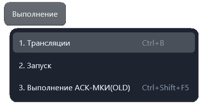
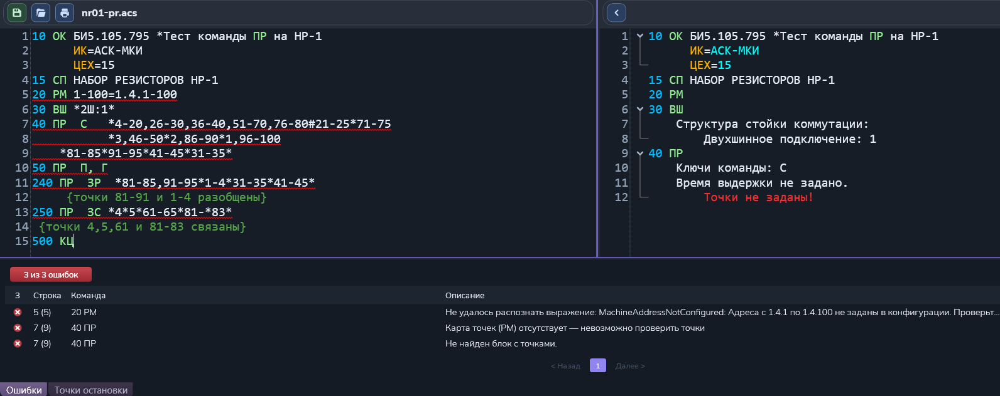

Трансляция ПК
Команда «Выполнение → Трансляции» проверяет текст программы контроля, распознаёт команды и формирует развёрнутое представление для встроенного исполнителя.
Сочетание по умолчанию: Ctrl + B.

Порядок работы
- Откройте программу в редакторе и переключитесь на её вкладку.
- Выберите «Выполнение → Трансляции» или нажмите Ctrl+B.
- Дождитесь окончания обработки и просмотрите результат и диагностику.
- Исправьте ошибки в исходном тексте и повторите трансляцию.
Поддерживаются файлы .pk, .pkw, .opk,
.opkw и .acs. Используется текущий текст редактора.
Если открыта вкладка трансляции, команда обновляет её по исходному тексту.
Результат
- Исходный текст — программа, которую вы проверяете.
- Результат трансляции — развёрнутые команды программы.
- Список ошибок и предупреждений — диагностика исходной программы.
Пример результата трансляции

На примере слева показан исходный текст с подчёркнутыми проблемными фрагментами, справа — результат обработки команд, внизу — список обнаруженных ошибок с номерами строк, командами и описаниями.
Это пример программы с ошибками, а не готового к запуску результата: в правой панели есть сообщение «Точки не заданы!», а в списке — ошибки карты точек и команды ПР. Исправьте указанные причины и повторите трансляцию.
Ошибки трансляции блокируют запуск: исправьте их и повторите проверку. Предупреждения также следует просмотреть; они сами по себе не равнозначны ошибке трансляции.
Если подходящая программа не открыта или тип файла не поддерживается, приложение показывает сообщение. Выберите нужный документ и повторите команду.
Трансляция проверяет программу и не выполняет её на оборудовании. Для исполнения используйте «Запуск».